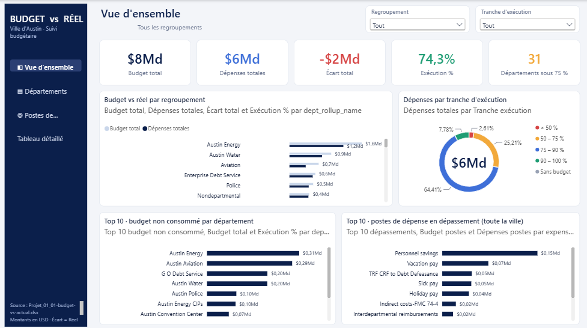
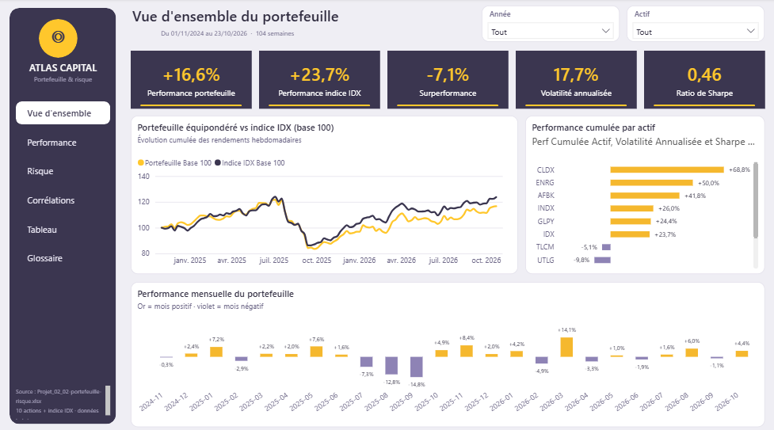
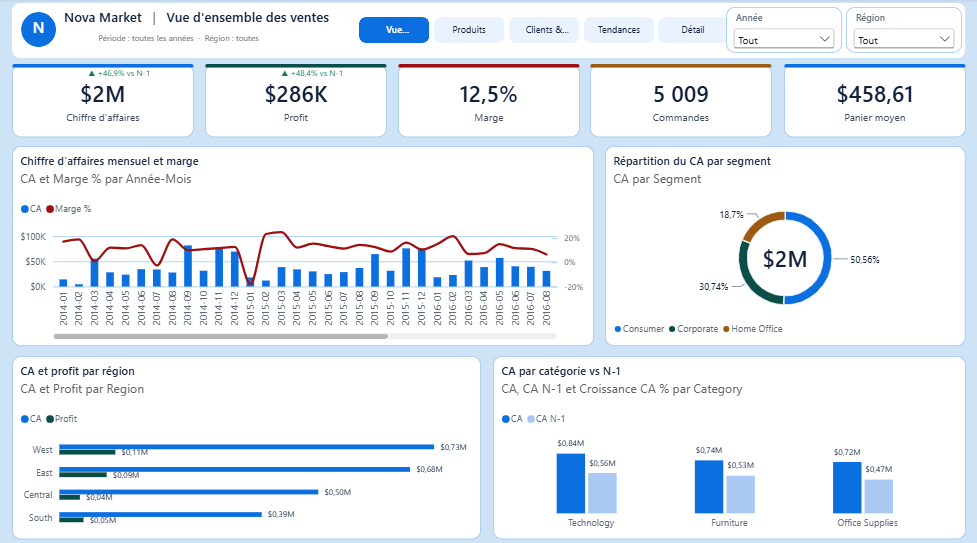
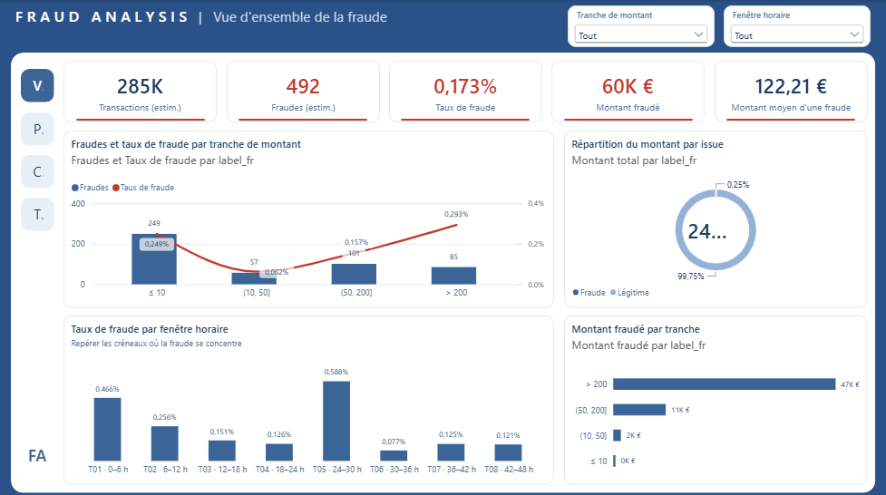
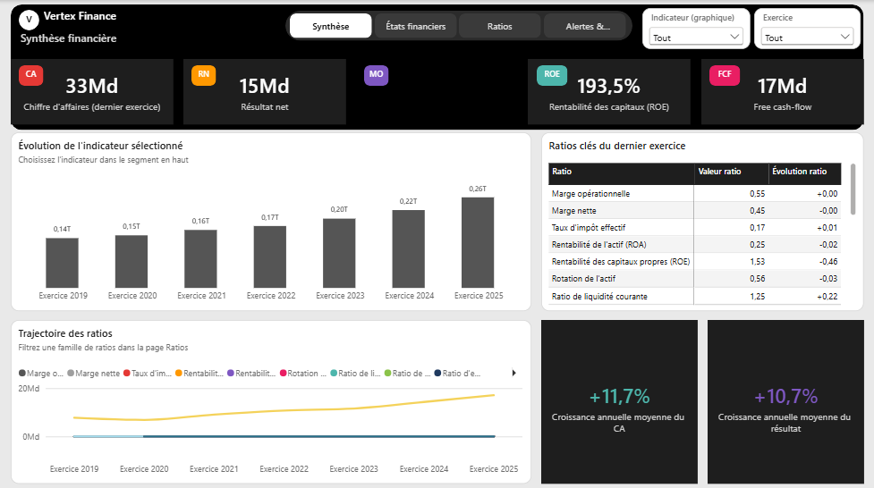
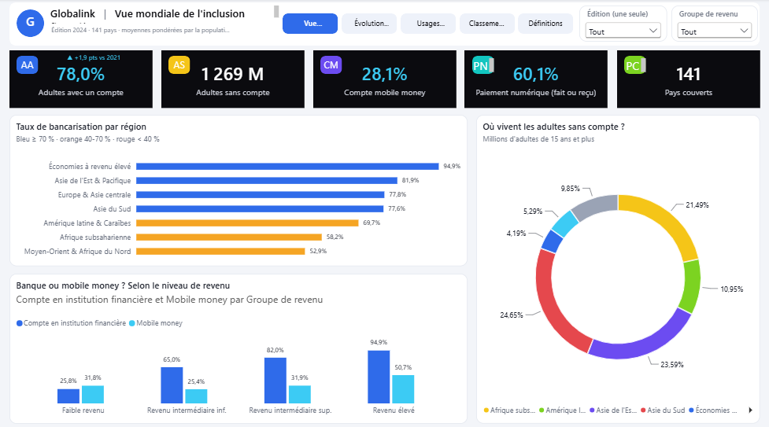
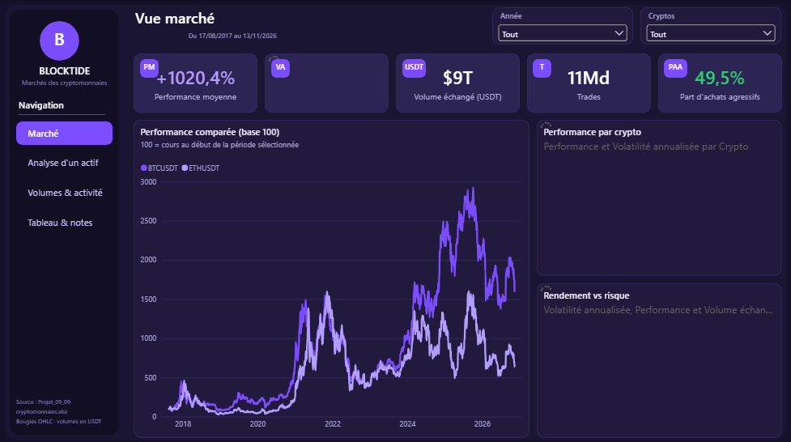

01 / FINANCE PUBLIQUE

Dépenser juste.
Vérifier tôt.
Où le budget municipal s'écarte-t-il du réalisé, et quels services vérifier en premier ?
4 PAGES25 MESURES DAXPBIP74,32 % CONSOMMÉ
Choisissez une question de gestion. Chaque étude ouvre le dashboard, ses pages, son modèle et la documentation qui le justifie.
Neuf dashboards construits sur le même chemin : question, données, modèle, rapport et recommandation.

Où le budget municipal s'écarte-t-il du réalisé, et quels services vérifier en premier ?

D'où viennent la performance et le risque du portefeuille, et quelles positions concentrent le risque ?

Quels produits, clients et régions portent les ventes et la marge ?

Quels clients feront défaut le mois suivant, et où se concentre la perte attendue ?

Quelles transactions revoir en priorité, et quel seuil équilibre fraude interceptée et friction ?

La croissance, la rentabilité et la liquidité évoluent-elles de façon soutenable ?

Quels profils et quelles conditions de campagne sont associés à une meilleure souscription ?

Où sont les fractures d'accès aux services financiers, par région, revenu et genre ?

Quel rendement et quel risque historique pour Bitcoin et Ethereum ?
Lire le signal et parcourir chaque page du rapport.
Ouvrir le projet dans Power BI Desktop et tester filtres et navigation.
Inspecter le modèle TMDL, les mesures DAX, les sources, le README et les contrôles.